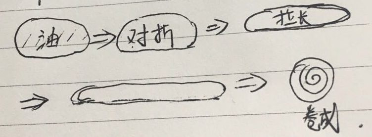

肉夹馍方法
范玲慧书
本例是五个饼的量 面 ①材料准备:面粉一斤、酵母三分之一袋、温水适量 ②具体操作:和成稍软的面、发酵至两倍大、揪成剂子、抹油、折、伸、卷、擀 ③烙成两面金黄（小火） 肉 ①五花肉切块、凉水下锅、焯水备用 ②锅中底油加爆香八角、姜、葱、蒜、香叶 肉倒入、加酱油、冰糖、醋、炒。 ③倒入两倍开水 ④最小火焖一个半小时 合成肉饼 肉+青椒+生菜+香菜（根据个人口味）剁碎！ 饼用用刀片开、夹肉即可食用
朱賀的聯絡方式
電子郵箱：zhuhe@zhuhe.tw
范玲慧书
本例是五个饼的量 面 ①材料准备:面粉一斤、酵母三分之一袋、温水适量 ②具体操作:和成稍软的面、发酵至两倍大、揪成剂子、抹油、折、伸、卷、擀 ③烙成两面金黄（小火） 肉 ①五花肉切块、凉水下锅、焯水备用 ②锅中底油加爆香八角、姜、葱、蒜、香叶 肉倒入、加酱油、冰糖、醋、炒。 ③倒入两倍开水 ④最小火焖一个半小时 合成肉饼 肉+青椒+生菜+香菜（根据个人口味）剁碎！ 饼用用刀片开、夹肉即可食用電子郵箱：zhuhe@zhuhe.tw